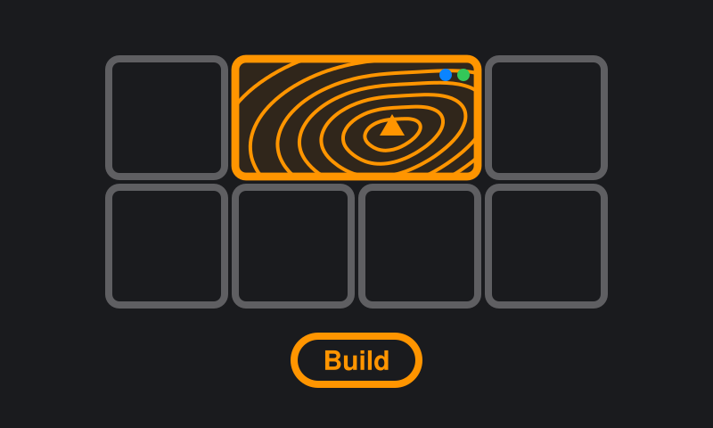
Basemaps
Pick an area and TopoKit builds a topographic map of it right on your iPhone or Mac, with shaded relief, contours, slope angle, trails, roads, water and place names. Once built, it works without a signal.
Learn moreA full GIS workflow on your iPhone and Mac. Build a topographic basemap of your area, add your own maps and data, and take it all past cell service. No account. No subscription needed.
TopoKit builds topographic basemaps right on the device and handles all your raster and vector data fully offline, organized into projects. Import your maps and points in any of the formats below, and take it into the field.
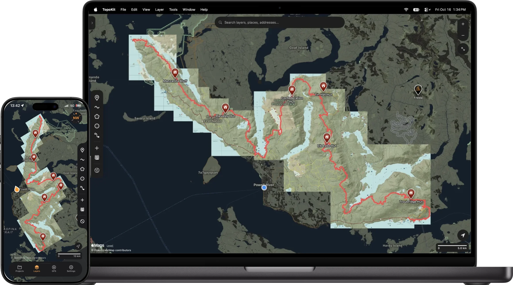
Click a card to watch it work, on Mac or on iPhone.

Pick an area and TopoKit builds a topographic map of it right on your iPhone or Mac, with shaded relief, contours, slope angle, trails, roads, water and place names. Once built, it works without a signal.
Learn more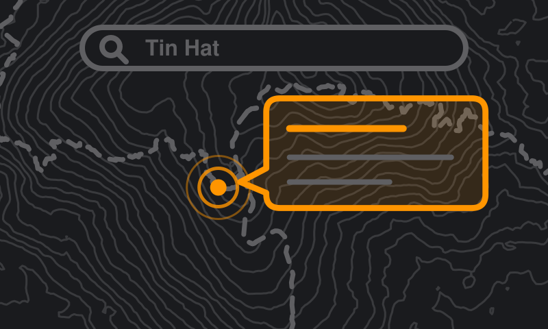
Tap a trail, a peak or one of your own lines and a card tells you what it is. Save trails and parks from your basemap into your project. Search finds their names without a signal.
Learn moreKeep your work organized in separate projects. Maps, points, polygons, and photos, all stored in one file you own.
Learn more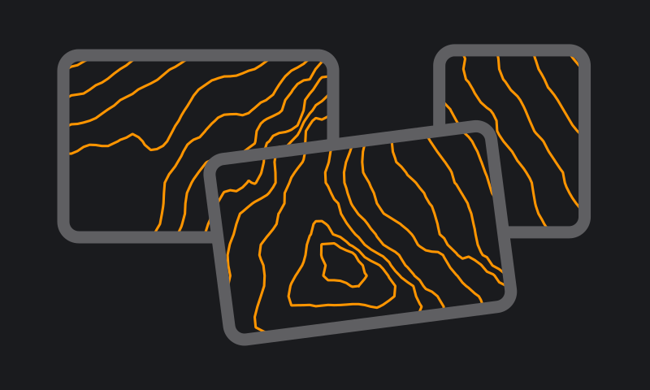
Stack as many GeoTIFFs and GeoPDFs as you need. Everything reprojects on the fly and lines up wherever it needs to be.
Learn more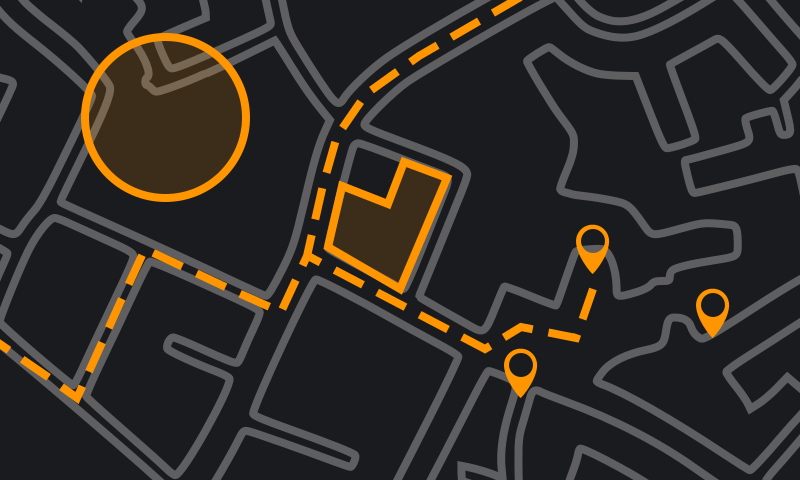
Drop points. Draw and edit lines and polygons. Import vector files, and export everything back out in four formats.
Learn more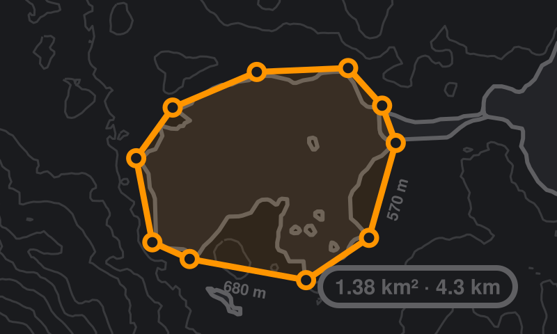
Drawing and measuring are one tool. Lengths appear along each side as you draw, and the card shows distance, area, bearing and more, in your units. Saving is optional.
Learn moreJust like the GIS apps you already know. Drag to reorder layers, group them into folders, and change their opacity.
Learn more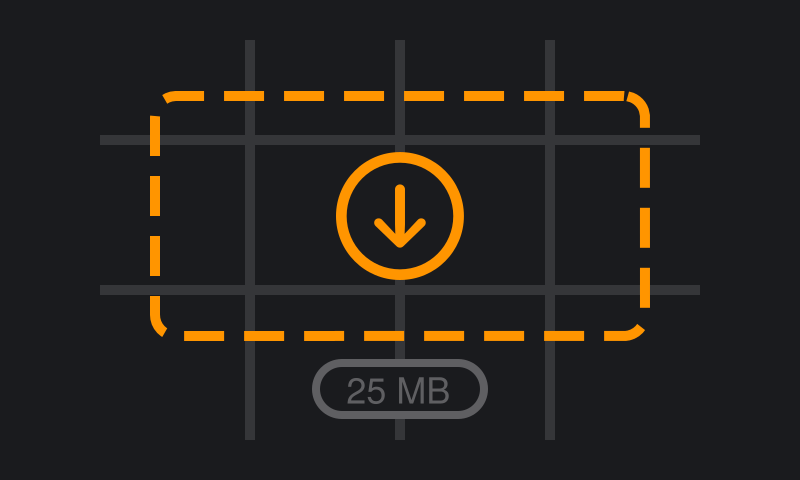
Add any XYZ or WMS tile server by URL. Draw a box on the map, and download tiles for offline use.
Learn more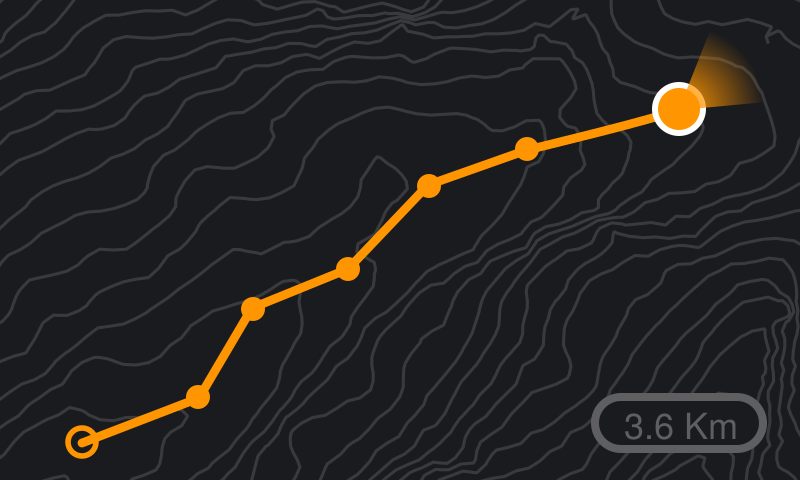
Record tracks with the phone in your pocket. Watch distance, speed, and elevation stats update live as you go. Every point tagged with accuracy, altitude, and time.
Learn more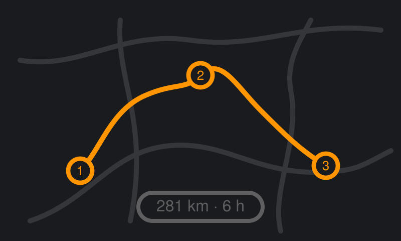
Add stops by searching or tapping the map, and the roads between them fill in for driving, walking or cycling. Check the elevation profile before saving, then share the route as a file.
Learn more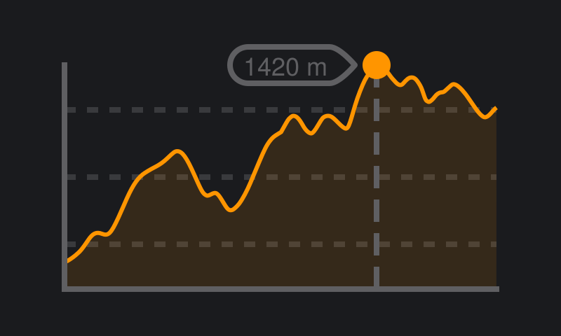
Download the elevation data once. Get point elevations and profiles anywhere you need. No signal required.
Learn more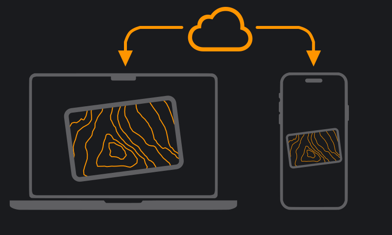
Work on a project on your Mac and open it on your iPhone. Same file, synced privately through your own iCloud.
Learn moreBuild a basemap of your area, import your maps and download your tiles before you leave. Once you're past cell service, they work exactly the same.
Before you go offlineTopoKit was built without an account. Your projects live on your device, and in your own iCloud if you turn on sync. Nothing you record is public by default, because nothing goes anywhere by default.
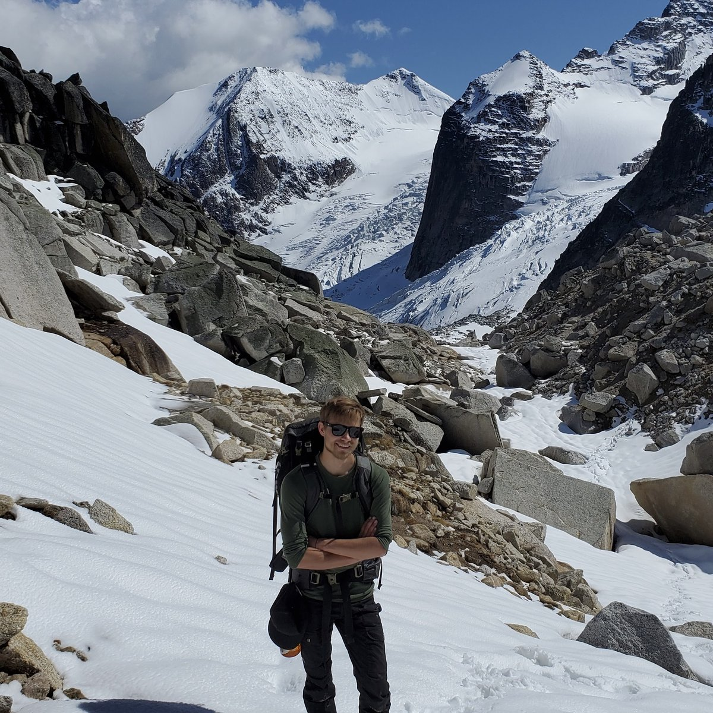
Hi, I'm Nikolay. I'm an outdoor enthusiast and GIS technician in British Columbia, Canada.
I built TopoKit because I wanted to take my data outdoors, and I couldn't find a mapping app that handled both raster and vector data, kept everything private, and didn't lock me into an expensive subscription. So I made one. You can buy TopoKit once and keep it, or pay monthly if you only need it for a season.
I use the app weekly: for data collection, backcountry trips on my own time, and any fieldwork that starts where cell service ends.
I'm constantly learning from my own experiences with TopoKit and always working to improve it. If you have an idea or something you'd like me to fix, I'm happy to look into it. Every message comes straight to me.
Capable. Private. Pay once, or by the month.
Download on theApp StoreTopoKit is free to download. Get it before 1 January 2027 and it's yours forever.
After that, opening, viewing, searching and exporting stay free. Creating and editing need the full app. Monthly is $4.99 USD a month, with a free first month. Unlock Forever is one payment of $34.99 USD.
Already bought TopoKit? You own all of it, with nothing to buy or restore. However you got it, TopoKit is unlocked on every iPhone and Mac signed into the same Apple Account.